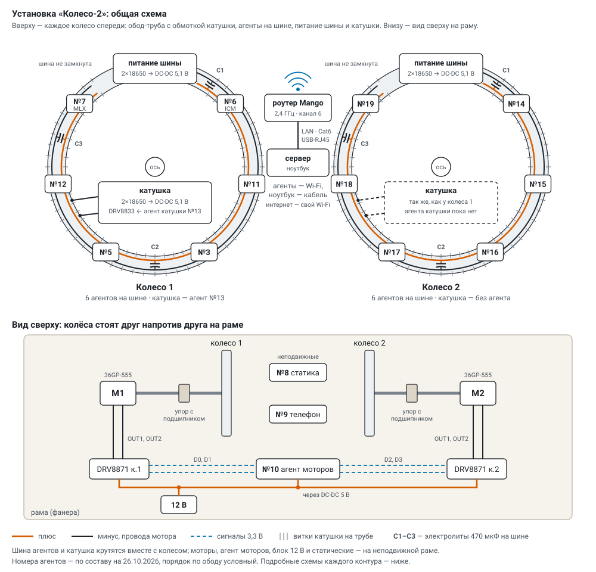

«Колесо-2»: как всё работает
Установка целиком, как она устроена сейчас (26.10.2026): из чего состоит, что делает каждый агент, как устроены сервер и основной экран, какие есть параметры. Подробности по темам — в отдельных документах: режимы, схемы подключения, групповой режим, поглощение, случайность, статика, датчики, телефон, моторы, программа и серии, температура. Как установка пришла к нынешнему виду — приложение А: история изменений.
1. Установка#


- Колёса — два, стоят друг напротив друга. Обод — труба с обмоткой катушки; внутри — по шесть агентов на шине 5,1 В от своих аккумуляторов. Колесо 1: №3, №5, №6 (датчик обода ICM-42688), №7 (магнитометр MLX90393), №11, №12; колесо 2: №14–№19.
- Катушка каждого колеса — свои аккумуляторы, мост DRV8833 и агент катушки (колесо 1 — №13): поле «+», «−» или выкл. В группы колеса он не входит.
- Рама: моторы 36GP-555 на осях колёс, два моста DRV8871, блок 12 В и агент моторов №10.
- Статика — неподвижные датчики между колёсами: акселерометр №8 по центру оси, телефон №9 рядом (сам меряет и шлёт по Wi-Fi).
- Сервер —
server/monitor.pyна ноутбуке в сети опыта: принимает телеметрию, проверяет простые, считает статику, ведёт программы и серии, управляет моторами и катушками, пишет всё на диск. Python 3 без сторонних библиотек; для статики — numpy. Запуск —tools/monitor.cmd. - Экран «Установка» —
http://<сервер>:8090/в браузере, на планшете или в телефоне. - Реестр —
registry/devices.csv: номер, MAC, метка каждой платы.
Агент — плата Seeed XIAO ESP32-S3 с прошивкой firmware/prime_lab. Роль задаётся с сервера:
| роль | что делает |
|---|---|
| ▶ генерация (A) | ищет простые числа из физического шума — сам или в группе |
| ▼ поглощение (B) | получает простые своей группы и рассеивает их в эфир, смешав со своим шумом |
| ◆ статика (S) | только меряет ускорение (500 Гц) и шлёт оси; всё считает сервер |
| ⚙ моторы / катушка (M) | крутит колёса через мосты или включает поле катушки по командам сервера |
Порты: 5005 — телеметрия (UDP), 5006 — маяк сервера, 5007 — команды, 8090 — HTTP (экран, /api, приём от телефона, образ прошивки).
Кто кому что шлёт — живая схема (на сервере — с живым состоянием: кто на связи, темп простых; молчащая ветка — пунктиром):
2. Жизнь агента#
- Включение. Заставка светодиодом: 5 быстрых вспышек, последние 4 знака MAC азбукой Морзе, 5 быстрых, номер платы из реестра, 5 медленных.
- Wi-Fi. Сеть из
secrets/wifi.ini(только 802.11b/g — так CSI приходит на каждый пакет), сон радио выключен: шум приёмника идёт в генератор непрерывно. Основная сеть — роутер GL.iNet Mango (компьютер подключён к нему кабелем через USB-адаптер), запасная (ssid2/password2) — прежний роутер: основная 40 с не пускает — плата уходит на запасную и на ней через 2 мин, потом раз в 10 мин, когда стоит, пробует основную; в телеметрииnet(0 — основная, 1 — запасная). - Поиск сервера. Сервер раз в 2 с рассылает маяк
W2SRV 5005на UDP 5006; агент сам находит адрес сервера. - Самопроверка. Миллер — Рабин на известных простых и «обманщиках» (до 2048 бит).
- Ожидание. После включения агент стоит: не считает, раз в секунду шлёт телеметрию.
- Работа. По команде сервера считает; светодиод вспыхивает на каждом пакете телеметрии.
- Остановка. Счёт встаёт, счётчики замирают — сервер забирает итоги.
- Прошивка по Wi-Fi (§ 13): образ — в свободный раздел, проверка MD5, перезапуск; новая прошивка пробная, пока агент не пробудет минуту на связи; не вышел за 10 минут или вылетел — загрузчик возвращает прежнюю.
Перезагрузился агент — сервер сам вернёт ему последние настройки.
3. Откуда берётся случайность#
| шум | что это | быстрота |
|---|---|---|
| ⚄ ГСЧ чипа | аппаратный генератор ESP32-S3 (esp_random), в него подмешивается шум приёмника Wi-Fi | ~45 тыс. слов/с — основной |
| Σ все доступные | ГСЧ + CSI с пульса + АЦП + дрожание через SHA-256 | как самый медленный из них |
| ≋ CSI с пульса | «отпечаток» радиоканала в кадрах пульса соседей (ESP-NOW, 10/с от каждого) | медленно |
| ↯ CSI с пинга роутера | то же по ответам роутера на пинг 20/с | медленно, осторожно (§ 7) |
| ⏚ АЦП D0 | свободная ножка D0: наводки и шум резисторов, ¼ бита на отсчёт | медленно |
| ⧖ дрожание RC | внутренний RC 136 кГц против кварца 40 МГц, ¼ бита на отсчёт | медленно |
| ↺ обратный шум | содержимое кадров поглотителей — петля через эфир (подмешать или только он) | сколько рассеют |
| ↕ акселерометр, 🧲 магнитометр | младшие байты осей датчиков обода — только он или добавкой к любому шуму | очень медленно |
- Один ГСЧ — его слова идут в число как есть. Любой другой набор — блоки SHA-256 по 256 бит; в каждый блок каждый отмеченный источник кладёт не меньше 256 засчитанных бит: число случайно, даже если хорош только один источник.
- Шум без хеша (
raw): младшие биты сырья прямо в число — видна физика источника; с выравниванием фон Неймана — снят перекос 0 и 1. - К ножке D0 ничего не подключать — с неё берётся шум АЦП. Подробно — randomness.md.
4. Как ищется простое (эгоистичный: каждый сам)#
шум → кандидат (длина ровно N бит, нечётный)
→ отсев делителями (простые меньше порога) ── делится → следующий
→ Миллер — Рабин по базам 2, 3, 5, 7, … ── «составное» → следующий
→ прошёл все базы → вероятно простое- Миллер — Рабин с базой a либо доказывает, что число составное («свидетель»), либо говорит «вероятно простое»; чем больше баз, тем меньше шанс ошибки. По умолчанию 8 баз, 256 бит, отсев делителями до 1000.
- Два ядра (
dc): ядро связи набирает шум и отсеивает, ядро счёта только проверяет — конвейер через очередь; греет сильнее. - Сервер перепроверяет присланные простые своим Миллером — Рабином (журнал простых,
pl); для 32 бит простое проверяется ещё и точно — так считаются ложные простые. - 32 бита — свой код; длиннее — mbedtls с аппаратным ускорителем.
5. Групповой режим#
Агенты подгруппы колеса считают вместе по ESP-NOW (адресные кадры, 24 Мбит/с, радио подтверждает каждый кадр). Состав группы и адреса участников присылает сервер вместе с настройкой — новый агент входит в группу без перепрошивки остальных. Три варианта (gv), подробно — group_protocol.md:
- групповой (каскад) (
gv2) — основной: числа складываются из кусочков шума всех, проверяют все сразу, каждый свои; найденное простое сверяет следующий; чужие кусочки ждут не дольшеpwмс, недостающие — своим шумом. Шестеро на двух ядрах — ~100–118 простых/с. - эстафета (
gv1) — число из шума всех, проверяет один, ход по кругу; темп одной-полутора плат при любом размере, почти не занимает эфир. - одно число на всех (
gv0, протокол третьей версии) — каждое число проверяют все, базы поделены по кругу, нашедший свидетеля — следующий мастер; медленно, но ответы обязаны совпадать — проверка целостности (согласие).
Когерентность — доля кругов, собранных из кусочков всех, и серии без сбоев; молчащий участник (не прислал кусочки после трёх просьб) не задерживает группу, любой кадр от него — его снова ждут.
6. Поглощение#
Агент-генератор, найдя простое, объявляет его в эфир одним кадром; поглотители другого колеса его слышат и рассеивают — смешивают со своим шумом и выпускают обратно: все со всеми (каждый — всё число), россыпь (каждый — свой кусок), эстафета, тишина; пустышка — тот же трафик без числа (контроль), фон — свой шум с заданной частотой. Обратный шум — генераторы берут в шум кадры поглотителей: петля через эфир. Подробно — scatter.md.
7. Температура и сторожа#
- Регулятор раз в секунду подбирает долю работы ядра счёта (5–100 %), чтобы кристалл держался на градус ниже предела (по умолчанию 70 °C, выше нельзя). Доля минимальна, а кристалл 20 с выше предела на 3 °C — радио засыпает между маяками; выше на 8 °C три секунды — авария: счёт стоит, пока не остынет на 3 °C ниже предела. Первые 12 с после перезапуска регулятор датчику не верит. Подробно — отдых, спринт, рейтинг агентов — thermal.md.
- Сторож радио: кадры ESP-NOW уходят, а отчётов радио о них нет 15 с — или Wi-Fi нет 90 с — плата перезапускается сама; сервер вернёт ей настройку, группа примет обратно.
- Сторож Wi-Fi («зомби»): плата «подключена», а пакеты не уходят 10 с — переподключение (
wrst); или 45 с нет маяка сервера (точка доступа плату забыла) — переподключение; три подряд — перезапуск (rbt3). В телеметрииudpe,bcn,heapmin,cmd. - Пульс: каждый агент раз в секунду шлёт всем кадр ESP-NOW «я жив» (считает ли, °C); у каждого — таблица соседей (кого слышит, с каким сигналом), раз в 5 с — на сервер пакетом
nbr. - CSI брать с пульса (
hb5–20,ping0): пинг роутера 100/с переполнял буферы передачи и давал «зомби»; пинг — только как отдельный шум, не выше 20/с и короткими опытами.
8. Основной экран «Установка»#
http://<сервер>:8090/ — одно окно на весь экран без прокрутки (1366×768 и больше), меню из двух пунктов: ▦ Установка и ? Документы. Цвет никогда не единственный признак: у каждого состояния значок и слово (палитра Okabe — Ito).
- Шапка: связь («● 11 из 13 на связи» / «✗ сервер не слышит плат»), идущая программа, ❗ тревога статики, 🔔 звук; кнопки «◉ найти плату», «опыт…», «⇅ серия…», «⟳ вращение…», «◆ статика», «☰ отчёт», «⋯ ещё»; «▶ Запустить N шагов · ≈ время», «⏹ Стоп после шага», «■ Всё стоп» (программа, счёт у всех, моторы, катушки).
- Колонки колёс (слева и справа): «сейчас» — подгруппы фишками (значок и слово состояния, номер, темп или °C с полоской до предела, А/М — датчики), строка катушки с ручным «выкл / + / −», обороты по датчику обода и сколько нужно для невесомости; «план опыта» — слои: роль (генерация / поглощение / стоит), способ (эгоистичный / групповой), шум — у каждого шума значок.
- Плашка над рисунком: часы, что идёт сейчас (шаг N из M с обратным отсчётом и полосой хода, пуск или тушение с пульта, «стоит»), итоги шага и программы или последняя программа, температура; на высоком экране — таблица колёс (режим, вращение, поле, связь).
- Рисунок установки: два колеса — агенты по ободу подгруппами (дуга с буквой и счётом «▶ 4/6»), внутри — режим (цветом роли со значком), способ, шум, обороты с направлением (⟳ вперёд, ⟲ назад) и поле; при включённом поле обод синий, стрелки по ходу поля. Под колесом — агент катушки, внизу посередине — агент моторов, между колёсами — измерители статики.
- Статика: вердикт крупно (✓ как эталон — продолжать · ⚠ отклонение — проверить · ↻ помеха или прибор — повторить · ◌ нет эталона · ○ нет данных) и за какой отрезок, каждый датчик с причинами словами, живые Гаусс, спектр и колебания за 10 с выбранного датчика и оси (форма словами: гаусс / хвосты / ступенчатый; СКО, асимметрия, эксцесс, толчки), эталон и его запись 1 / 3 / 5 мин.
- Строки плана: «4 · поле катушек» (выкл, ++, +−, −+, −−) и «5 · шаг» (длина, температура, отдых, повторы, контроль, что делать при отклонении статики).
- Лента шагов внизу: «план» (что уйдёт по «Запустить») или «программа №…» — шаги по порядку, контрольные штриховкой, текущий рамкой, у выполненных — простые, темп и вывод статики словом.
- Окна поверх экрана: агент (нажать на фишку или кружок; «∿ вживую» — колебания, Гаусс, спектр по всем осям, окна до 15 мин; «🧲 поле вживую»; «шум и точность датчика»; роль, найти), «состав…» (колесо и подгруппа каждого агента, агенты моторов и катушек — отдельной строкой), «шаги…», «опыт…», «⇅ серия…» (§ 9), «⟳ вращение…» (§ 9), «◆ статика подробно», «☰ отчёт», «⋯ ещё»: ↻ как работает (живая схема), диагностика, прошивка, пульт, наблюдение, прежняя панель, документы.
- ❗ Тревога статики: вывод «⚠ проверить» — три сигнала, мигающее «❗» в шапке и окно с причиной и кнопкой «↻ повторить шаг ещё раз»; программа может повторять такой шаг сама (§ 9).
- ⓘ у важного — что это и зачем (на планшете подсказки при наведении не видны).
Диагностика установки — одношаговая программа (каждая подгруппа считает каскадом из ГСЧ), потом таблица по агентам: связь, кого из своей группы слышит, темп против медианы группы, температура, память, датчики, итог ✓ / ◐ / ✗. Найти плату — нажатие на агента мигает его светодиодом 20 с.
9. Опыт: шаги, серии, программа, вращение#
- Шаг — одна настройка установки на заданное время: у каждой подгруппы своя группа и номер настройки, агенты вне групп шага стоят и остывают. Шаги собираются из слоёв: «＋ шаг» — из текущих, «⇊ вся матрица» — все сочетания отмеченного.
- Серия («⇅ серия…») — вложенные циклы по пяти уровням: ⟳ вращение колёс (стоят, вместе, вместе назад, навстречу, только одно), ⇉ поле катушек, ⋈ совместная работа, ∿ шум, ⇄ излучение/поглощение. Порядок сверху вниз — вложенность (верхний меняется реже всех), уровни перетаскиваются; длина сета 10–60 с (30 с рекомендуется: статика успевает 3 окна по 10 с, а вывод — от двух подряд); установление по тому, что сменилось (вращение 15 с, режим 8 с, поле 5 с); расстояние между колёсами записывается в каждый сет; видно число сетов, время, разгоны колёс и разметку по времени.
- Программа — шаги или серия по «▶ Запустить»: эталон шума перед началом, повторы, случайный порядок (у серии выключен), отдых, вращение и поле на каждом шаге, сравнение опыта с контролем по заранее названному критерию, проверка найденной аномалии парами, повтор испорченного шага и шага с отклонением статики — program.md. Отчёт — все шаги с режимами, простыми, статикой и выводом, выгрузка CSV.
- Вращение («⟳ вращение…»): колёса по отдельности / вместе / навстречу / только одно; режим — стоит, ШИМ, обороты или невесомость (обороты подбираются, пока датчик обода не покажет k = ω²r/g = 1; при r = 450 мм — 44,6 об/мин), смена направления по таймеру. В режимах «обороты» и «невесомость» — ПИ по оборотам с обода. Подробно — sensors.md.
10. Пульт и прежняя панель#
- Пульт (окно «⋯ ещё → ⚙ пульт») — логические группы 1–4 и наборы: каждая группа работает своим набором (каждый сам, два ядра, одно число, эстафета, каскад, с поглощением, пустышка, петля), «▶ Пуск» применяет все группы сразу, «⏹ Стоп» — все генераторы стоят и остывают (80 МГц), «≋ Тушение» — генераторы только рассеивают свой шум (шум в шум, ни одного простого); свои параметры агентов; журнал опытов. Составы хранятся в
data/control.json(compose). - Наблюдение (окно «◉ наблюдение») — статика и поток простых крупно, читается издалека.
- Прежняя панель (
/old) — все счётчики, графики и параметры агентов, сессии, журнал опытов (data/runs/) — для отладки.
11. Параметры агентов#
Уходят агентам строкой CFG … на UDP 5007; агент подтверждает их номером настройки (cid) в телеметрии, пока не совпало — сервер повторяет раз в 2 с. Основной экран ставит их сам из слоёв и серий; вручную — на пульте и в прежней панели. Виды: общие (одинаковые в группе), свои у агента, на ходу (меняются без нового номера, счёт продолжается).
| параметр | что это | значения | по умолчанию | вид |
|---|---|---|---|---|
role | роль: 0 — генерация, 1 — поглощение, 2 — статика, 3 — моторы или катушка (агент запоминает роль и перезапускается) | 0–3 | 0 | свой |
mode | 0 — эгоистичный, 1 — групповой | 0, 1 | 0 | общий |
gv | вариант группы: 0 — одно число на всех, 1 — эстафета, 2 — каскад | 0, 1, 2 | 0 | общий |
rk | эстафета и каскад: простых за ход | 1–16 | 1 | общий |
pw | эстафета и каскад: ждать кусочки не дольше, мс; потом недостающие — своим шумом; 0 — ждать всех | 0–5000 | 0 | общий |
grp, gm | номера и MAC участников группы (сервер подставляет сам) | общий | ||
nr | скорость ESP-NOW: 1 — 24 Мбит/с, 2 — 6 Мбит/с, 0 — 1 Мбит/с (медленно, греет) | 0, 1, 2 | 1 | общий |
bits | длина простого | 32 … 2048 | 256 | общий |
nb | число баз Миллера — Рабина (первые из 2, 3, 5, 7, 11, 13, 17, 19, 23, 29, 31, 37) | 1–12 | 8 | общий |
all | 1 — каждого кандидата проверяют все базы; 0 — до первой «составное» | 0, 1 | 0 | общий |
td | отсев делителями меньше этого числа; 0 — без отсева | 0 … 20 000 | 1000 | общий |
k | одно число на всех: кандидатов за один сбор | 4–64 | 24 | общий |
pre | группа: кусочки шума набирать заранее (только при одном ГСЧ) | 0, 1 | 1 | общий |
dc | два ядра: ядро связи набирает шум и отсеивает, ядро счёта только проверяет | 0, 1 | 0 | общий |
tp | период телеметрии, мс | 500–5000 | 1000 | общий |
src | шум (маска): 1 — ГСЧ, 2 — CSI, 4 — АЦП, 8 — дрожание, 16 — обратный шум (эфир поглотителей), 32 — акселерометр обода, 64 — магнитометр обода | 1–127 | 1 | свой |
raw | 0 — блоки SHA-256; 1 — без хеша; 2 — без хеша с фон Нейманом | 0, 1, 2 | 0 | свой |
cf | CSI: 0 — с любых кадров, 1 — только ответы роутера, 2 — только кадры поглотителей; 3 — опыт: пинг без CSI | 0–3 | 0 | общий |
ping | пингов роутера в секунду для CSI; 0 — без пинга | 0, 10–200 | 100 | свой |
hb | пульс: кадров «я жив» в секунду всем; соседям каждый такой кадр — замер CSI | 1–20 | 1 | на ходу |
tmax | предел температуры кристалла, °C | 40–70 | 70 | свой, на ходу |
txp | мощность передатчика, дБм | 2–20 | 20 | свой, на ходу |
cpu | частота процессора, МГц | 80, 160, 240 | 240 | свой |
led | вспышка светодиода на пакетах телеметрии | 0, 1 | 1 | на ходу |
sm | как поглотители рассеивают: 1 — все со всеми, 2 — россыпь, 3 — эстафета, 0 — тишина | 0–4 | 1 | общий |
sh | пустышка: тот же трафик, вместо числа — шум | 0, 1 | 0 | общий |
bgr | фон поглотителей: кадров своего шума в секунду | 0–200 | 0 | общий |
sf | функция рассеяния у поглотителя: хеш, XOR, умножение, перестановка бит | 0–3 | 0 | свой |
bg, bm | номера и MAC поглотителей (сервер подставляет сам) | общий | ||
tl, tq | телеметрия: 0 — обычная, 1 — редкая, 2 — молчание; молчать tq с (0 — пока не отменят) | 0–2; 0–65535 | 0; 0 | свой, на ходу |
dur | шаг на агенте: через столько секунд агент сам останавливается и сдаёт итоги (done) | 0–7200 | 0 | на ходу |
ro | только с dur: Wi-Fi выкл на время шага, если эфир не нужен | 0, 1 | 0 | на ходу |
pl | журнал простых: каждое найденное простое — на сервер пакетами prm | 0, 1 | 0 | общий |
rmm | радиус датчика обода, мм | 50–2000 | 450 | свой, на ходу |
afs, avg | статике: предел ±g; среднее по стольким отсчётам 1000 Гц | 2–16; 1–8 | 2; 2 | свой, на ходу |
run | 1 — считать, 0 — стоять | 0, 1 | 0 |
Что обнуляет счётчики: новый номер настройки — сменилось что-то кроме параметров «на ходу», старт или сброс. В группе номер один на всех. Остановка не обнуляет — итоги замирают.
Зашито в прошивке: регулятор температуры (4 % в секунду на градус); сроки протокола группы (вдвое дольше обычного + 20 мс, 3 повтора, перехват хода через 1,5 с); оценки шума (CSI — 32 бита на пакет, АЦП и дрожание — ¼ бита на отсчёт); Wi-Fi только b/g без сна радио; ножка АЦП D0; порты 5005–5007.
12. Телеметрия и данные#
- Агент раз в секунду шлёт
tel(≤1460 байт), в группе ещёgrp, раз в 5 с —nbr(соседи); статика —acc(отсчёты пачками), датчики обода —imu,mag; телефон шлёт те же пакеты строками вPOST /api/ingest. Счётчики накопительные с начала настройки: потеря пакета ничего не теряет. - Каждый пакет как есть пишется в
data/raw/<дата>.jsonl; при перезапуске сервер перечитывает хвост дня (последние два часа). Отсчёты статики —data/accel/<дата>/(int16 подряд + индекс). - Простые из журналов агентов перепроверяют процессы-помощники (
server/primecheck.py, до 6 по ядрам) пачками: приёмник не ждёт проверки, «последний пакет» агента назад не сдвигается. data/control.json— настройки и составы;data/programs/— программы с шагами и итогами;data/primes/<дата>/<mac>.txt— журнал простых;data/static/baselines/— эталоны статики;data/commands.jsonl— журнал команд./api/health— самопроверка сервера (живы ли задачи, давность пакета, очередь проверки, диск).
13. Новый агент и прошивка#
Новая плата прошивается по USB один раз — так в неё попадают prime_lab с прошивкой по Wi-Fi, данные сети и ключ подписи; дальше её обновляют по Wi-Fi вместе со всеми.
- Подключить плату кабелем с передачей данных.
- «⋯ ещё → ⇪ прошивка» на основном экране: плата видна как «★ новая — в реестре нет», «прошить по USB» (или двойной щелчок по
tools/new_board.cmd). - Плата записывается в реестр следующим номером и через ~10 с выходит на связь; в «состав…» — поставить ей колесо и подгруппу.
Сервер узнаёт плату по серийному номеру USB (у ESP32-S3 это MAC). Плату не видно — зажать BOOT, переподключить кабель, отпустить. Вручную: tools/build.sh prime_lab COM<N>.
Обновить установленные платы — по Wi-Fi: собрать (tools/build.sh prime_lab) и «прошить всех на связи по Wi-Fi» (или python tools/ota.py all). Сервер отдаёт образ (/fw/prime_lab.bin) и шлёт команду OTA …, подписанную ключом secrets/ota.key (HMAC-SHA256, в git не попадает). Агент скачивает образ в свободный раздел, сверяет длину и MD5, перезапускается; не подтвердилась за 10 минут — откат к прежней.
14. Замеры (справочно)#
Одна плата, 256 бит, если не сказано иначе.
| что | результат |
|---|---|
| ГСЧ | 2300 кандидатов/с, ~27 простых/с, 36 мс на простое |
| CSI / АЦП / дрожание | 12 / 18 / 15 кандидатов/с |
| 1024 / 2048 бит, ГСЧ | 185 / 30 кандидатов/с; проверка базой 25 / 181 мс |
| четыре платы, эгоистичный | 100–106 простых/с (по 25–27) |
| четыре платы, эгоистичный, два ядра | 179,6 простых/с (по 41–47); у предела 70 °C регулятор режет до ~155 |
| одно число на всех, 1 / 2 / 3 / 4 платы | 24,5 / 16,5 / 10,5 / 7,7 простых/с |
| эстафета, два ядра, 4 платы | 37,1 простых/с |
| каскад, два ядра: 4 / 6 плат | 80–92 / 118 простых/с |
| две группы сразу | друг другу не мешают |
Подробно — group_protocol.md, randomness.md, thermal.md.
15. Инструменты#
| файл | что делает |
|---|---|
tools/monitor.cmd | запустить сервер |
tools/build.sh <скетч> [порт] | сборка с версией из git, запись платы в реестр, прошивка |
tools/new_board.py, tools/new_board.cmd | первая прошивка новых плат по USB |
tools/ota.py [all \| номера] [--force] | прошить агентов по Wi-Fi и дождаться новой версии |
tools/build_docs.py [--static] | документация в HTML (docs/html/; сервер делает это сам при старте); --static — комплект для показа вне сети в build/site/ |
tools/publish.py [--push] | открытая копия на GitHub одним коммитом с проверкой на утечки |
tools/multi_test.py [секунд] [случаи] | прогон агентов по составам и режимам с проверкой счётчиков |
tools/anomaly_run.py, tools/anomaly_summary.py | прогоны по шагам с журналом простых — поиск аномалий; сводка |
tools/prime_stats.py [дата] | статистика журнала простых: проверка, повторы, остатки, биты, промежутки |
tools/nightly.py | ежевечерняя «зарядка»: короткие прогоны, сравнение с медианой прошлых вечеров, матрица «кто кого слышит» |
tools/soak.py, tools/sprint.py, tools/rest_ab.py | долгий прогон одной настройки; спринт; отдых по очереди «без» и «с» |
tools/imu_noise.py <агент> [минут] | шум и точность акселерометра: СКО, гистограмма с гауссом, спектр, Аллан |
tools/sim_gen.py, tools/sim_agents.py | имитация агентов-генераторов и агентов с датчиками — проверить экран без плат |
tools/test_analysis.py, tools/test_static_watch.py | проверка расчётов колеса и статики на синтетике |
tools/demo_capture.py | снимок данных тестового сервера для демонстрации основного экрана в опубликованной копии |
tools/runs_from_raw.py [дата] | восстановить журнал опытов за день из сырья |
tools/serial_capture.py, tools/count_boards.ps1, tools/register.py | журнал платы по USB; какие платы видит Windows; запись в реестр |
tools/video.py | ролики: кадры, расшифровка речи, озвучка, субтитры ru/en |
firmware/entropy_probe + tools/probe_report.py | замер источников шума |
Без плат: python server/monitor.py --http 8092 --udp 5016 --data data/test/gen --no-beacon и python tools/sim_gen.py 6 --port 5016, затем http://localhost:8092/.
16. Ограничения и что дальше#
- В группе каждое число проверяют несколько агентов — «одно число на всех» медленнее эгоистичного; каскад до шести агентов почти равен эгоистичному, но упирается в тепло и общий эфир (эфир один на все колёса).
- Проверка базой через mbedtls (~1 мс на 256 бит) — узкое место конвейера на двух ядрах; потолок задаёт ГСЧ: 45 000 слов/с — 5600 кандидатов по 256 бит в секунду, сейчас 4100.
- Датчики температуры разных плат расходятся на несколько градусов.
- Впереди: агент катушки колеса 2, «одинаковые числа у всех» и поглощение «один к одному» в прошивке, CSI со всего эфира; счётчик Гейгера, камера и микрофон как внешние источники.